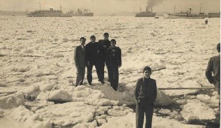

İstanbul 1954 yılında da tarihi kışlarından birini yaşamıştı. 25 Şubat sabahı İstanbul Boğazı’na bakan kent sakinleri gözlerine inanamamışlardı; Boğaz’da devasa buz parçaları yüzmekteydi ve Boğaz’ın bazı bölümleri ise tamamen buzlarla kaplanmıştı. Çok sayıda insan bu tarihi fırsatı kaçırmayıp, İstanbul Boğazı’nı yürüyerek geçiyor, bazıları ise buz parçaları üzerinde Türk bayraklarıyla pozlar veriyordu. Uzun yıllar önce yaşanan bu ilginç olayın kaynağı Tuna Nehri’ne uzanıyordu. Romanya’dan Karadeniz’e dökülen Avrupa’nın en uzun nehri, o kış donmuş ve üzerinde ulaşım yapılamaz hale gelmişti. Patlayıcılarla parçalanan buz parçaları Karadeniz boyunca sürüklenerek İstanbul Boğazı’na gelmişti. Boğaz’da sıkışarak birleşen bu parçalar Avrupa ile Asya kıtasını birleştirmişti.

Boğaz’ın buzlarla kaplandığı gün